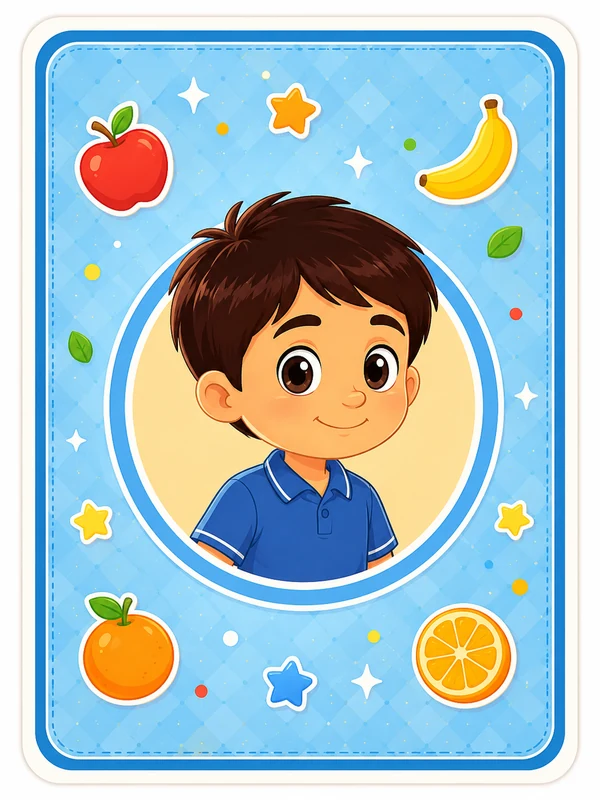

المعلّم الصغير
ألعاب تعليمية ممتعة
اختر لعبتك وابدأ التحدي
الإصدار العشرون
ماذا تريد أن تفعل اليوم؟
اختر قسم الألعاب أو قسم المشاهدة والتعلّم.

المعلّم الصغير
اختر لعبتك وابدأ التحدي
اختر قسم الألعاب أو قسم المشاهدة والتعلّم.
قسم الألعاب
اختر اللعبة التي تريدها، ثم ادخل إلى المستوى.
شاهد وتعلّم
بعد اختيار القسم ستظهر المقاطع لتشغيل كل مقطع بمفرده.
اختر مقطعًا
يُعرض الآن
تحتاج مشاهدة المقاطع إلى اتصال بالإنترنت.
فتح هذا المقطع في يوتيوبجارٍ تحميل المقاطع...
ذاكرة الفواكه
اقلب بطاقتين في كل مرة، وحاول العثور على الفواكه المتشابهة.
المستوى السهل
الحرف والحيوان
شاهد الحرف، ثم اختر الحيوان الذي يبدأ اسمه بهذا الحرف.
المستوى الأول
أي حيوان يبدأ بحرف
أاختر بطاقة واحدة
آيات من جزء عم
اقرأ الآية الكريمة، ثم اختر السورة التي وردت فيها.
يظهر في كل جولة 10 أسئلة، وتتبدّل الأسئلة عند إعادة المستوى.
المستوى الأول
في أي سورة وردت هذه الآية؟
﴿ ٱللَّهُ ٱلصَّمَدُ ﴾
اختر إجابة واحدة
تطبيق تعليمي ممتع للأطفال، يقدّم ألعابًا بسيطة ومسلية تساعد على تنمية الذاكرة والتركيز والتعلّم بطريقة محببة، مع إضافة ألعاب جديدة باستمرار.
برمجة فريق المعلّم الصغير
لقد طابقت جميع الفواكه في 0 محاولات.
تعرّفت إلى الحيوانات الثلاثة واختَرت الإجابات الصحيحة.
ما شاء الله، زادك الله حبًّا وحفظًا للقرآن.